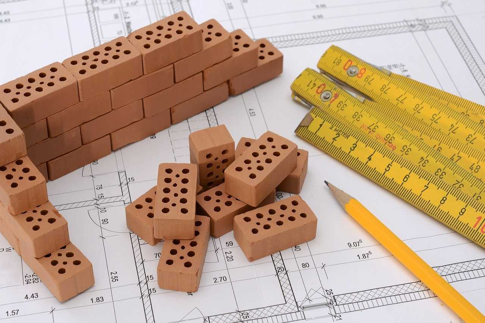
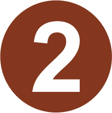
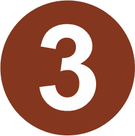
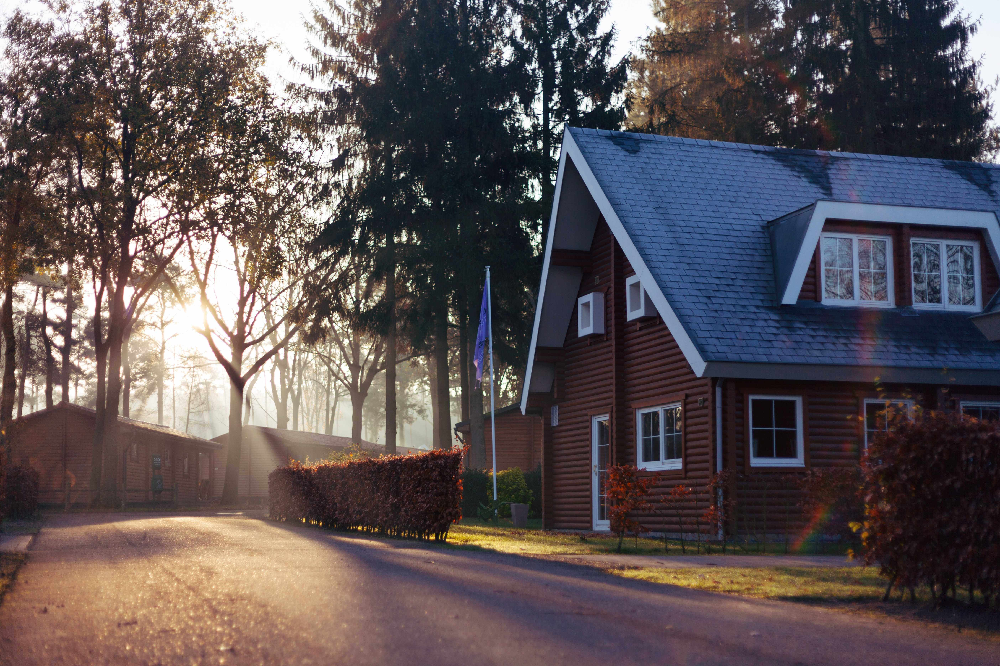
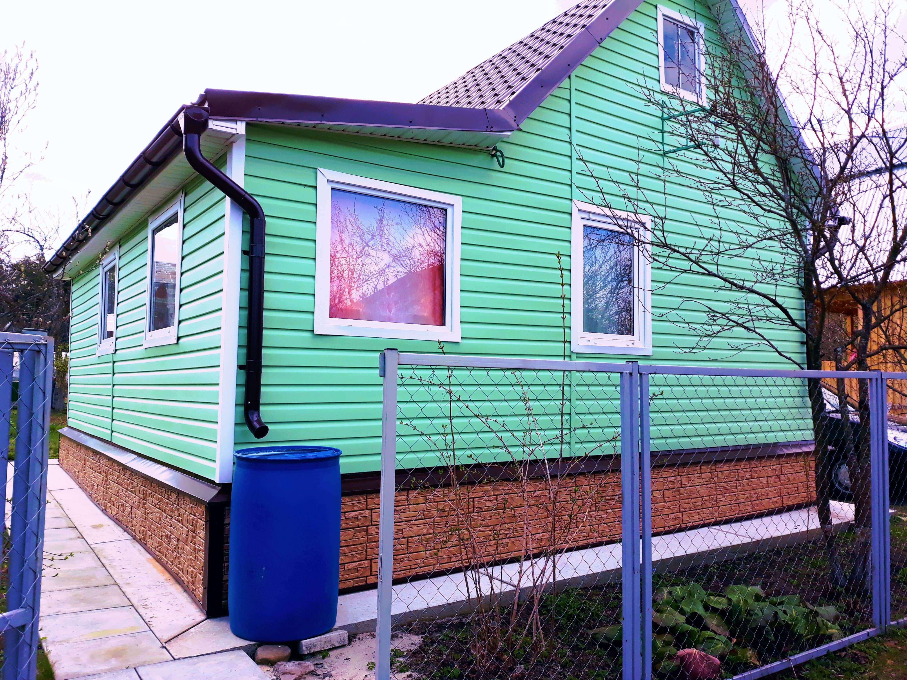

Вы приобрели земельный участок ИЖС - поздравляем! Было бы идеально, чтобы он был вблизи других построек с коммуникациями, что значительно сократит расходы на их проведение.
Пригашаем кадастрового инженера, чтобы выполнить процедуру межевания и поставить участок на кадастровый учет.
Получаем разрешение на строительство. Эта бумага дает право застройщику на строительство и реконструкцию капитальных строений. На постройку хозяйственных построек, бань, гаражей на участке разрешение получать не нужно.
Теперь нужно выбрать проект желанного строения. Нашли картинку в интернете, скачали. При выборе проекта учли размеры и форму участка, его геологические особенности, привязку к местности. Но все же проектирование дома нужно поручить профессионалу, он учтет все нюансы, что позволит избежать многих ошибок.
Проект включает в себя основные характеристики объекта: этажность, количество комнат, их площадь, виды внутренней и внешней отделок, инженерные коммуникации. Решение поменять что-то непосредственно в ходе строительства влечет за собой увеличение расходов и времени.
Возводить постройки нужно в соответствии со СНиП по строительству частных домов, которые предполагают следующие нормы:
- На участке ИЖС должен быть только один дом.
- Этажей может быть не больше трех.
- Площадь дома не должна быть больше 1200 метров квадратных.
- Постройки на участке должны отстоять от красной линии на 2-6 метров, в зависимости от региона.
- От жилья до нежилых построек расстояние не меньше 5 метров.
- Соседские дома должны быть построены на расстоянии: деревянные — 15 метров, от кирпичного до деревянного — 10 метров, между кирпичными — 6 метров.
- До леса — 15 метров.
Разновидности строительства домов.
Дом из кирпича.
 Кирпичные дома пользуются наибольшей популярность среди заказчиков. Данный материал позволяет возводить дома как простых прямоугольных форм, так и сложных, интересных конструкций.
Кирпичные дома пользуются наибольшей популярность среди заказчиков. Данный материал позволяет возводить дома как простых прямоугольных форм, так и сложных, интересных конструкций.
Положительные свойства кирпича: экологичность, огнестойкость, долговечность.
Отрицательные свойства: высокая цена, высокая стоимость работ, низкая скорость возведения.
Дом из блоков.

Блоки бывают нескольких видов – газосиликатные, пенобетонные, керамзитобетонные и арболитовые. У каждого из видов блоков есть свои индивидуальные свойства, мы рассмотрим общие.
Положительные свойства блоков: низкая теплопроводность, малый вес, большой габарит, минимальная гигроскопичность, огнеустойчивость, экологичность, высокая скорость возведения, низкая цена, низкая стоимость работ.
Отрицательные свойства: пористая структура, хрупкость, неэстетичный внешний вид, плохая геометрия.
Дом из бруса.
Брус бывает трёх видов: профилированный, цельный, клееный.
Положительные свойства древесины: высокая экологичность, иногда не требует внутренней и внешней отделки, доступная цена, низкая стоимость работ, высокая скорость возведения, несложная технология постройки.
Отрицательные свойства: низкая огнестойкость, подверженность гниению.
Каркасные дома.
Каркасные дома состоят из фундамента, каркаса, утеплителя, паро-, гидро-, ветроизоляций, внутренней и внешней отделки.
Положительные свойства: легкость конструкции, высокая скорость возведения, влагоустойчивость, доступная цена, низкая стоимость работ.
Отрицательные свойства: низкая огнестойкость, подверженность гниению.
Выбираем строительную бригаду. Строительство дома своими силами позволяет сэкономить бюджет на 20-25%, но часто не приводит к положительному результату. Иногда заказчики обращаются к нам, когда строительство началось, но они намучились с выбором материалов, организацией доставки, техникой, задача оказалась непосильной, нет времени и сил. Поэтому, взвесив все за и против, тщательно просчитав бюджет, обратитесь к профессионалам.
Мы поможем Вам с выбором проекта, предоставим подробную смету на стоимость работ и материалов. Вы будете точно уверены в выполнении данной задачи, или откорректируете проект под свой бюджет и станете счастливым обладателем красивого, качественно и быстро построенного дома!